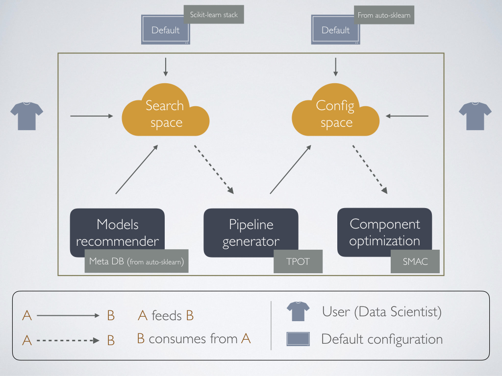

Overview of our solution¶
As of today, many techniques to automate machine learning pipelinens - or parts of it - have been researched as listed in the official AutoML site. However, there are few usable results available and moreover, they present technological limitations that make them hard to use and even harder to combine their strengths into one single solution. These technological limitations include platoforms incompatibility (programming languages, versions, operating systems, etc.), insufficient sofware engineering design that does not allow for extension and insufficient maintenance by their developers. Hence, the intention of our solution is to gather the state-of-art technologies together and solve some specifc Data Science use cases. These two aspects are detailed below.
Technologies¶
Python has been chosen as the programming language for our solution. This decision has been motivated by analyzing the robustness of the two most used languanges in Data Science (R and Python) and the number of state-of-art solutions already developed in each of them. Python counts with an strong ML framework: scikit-learn. This has been used by solutions such as TPOT and auto-sklearn to explore AutoML.
Additionally to Python, we have restricted the OS to Unix architectures, since optimization binaries are better supported for these platforms.
State-of-art tools¶
Our solution makes use of the pre-learned meta-knowledge acquired by auto-sklearn to find candidate models for a given dataset, TPOT’s Genetic Programming approach to find pipelines in an automated way and the Bayesian Optimization implemeted in SMAC to fine-tune a given pipeline.
Use cases¶
This tool has first been developed at Achmea, where a list of basic use cases was identified as the starting point of the project. This list is as follows:
- UC1: Data scientist does not have any clue on what pipeline to apply on the dataset he/she is working on and would like to automatically find one.
- UC2: Data scientist knows exactly the pipeline he is going to apply to the dataset he/she is working on. Hence, optimizing this pipeline’s hyperparameters is required.
- UC3: Data scientist would like to explore possible solutions for the dataset he/she is working on.
- UC4: Data scientist knows a set of possible pipeline components that may work well on the dataset he/she is working on and wants to come up with the best possible solution among them.
Proposed architecture¶
As shown in the image below, our architecture comprises three main components: the Models Recommender, the Pipeline Generator and the Pipeline Optimizer. Additionally, two spaces are defined. All these components are explained next.
{kind=link}
Search Space
The search space is the set of algorithms used to solve a machine learning problem. These algorithms include: pre-processors (e.g. scalers), feature engineering methods (e.g. polynomial features) and models (e.g. Random Forest).
Configuration Space
To understand the configuration space we first need to think of the hyperparameters for a given algorithm. If for example, a Random Forest is used, the number of trees is a parameter of this algorithm. In Machine Learning this is known as an hyperparameter. Extrapolating this idea to a pipeline, we may end up with a bigger list of hyperparameters.
The configuration space is the set of all the hyperparameters in a pipeline, following the next format: <name, lower limit, upper limit, default value>. This configuration space is used by the Pipeline Optimizer and can be better understood by thinking of bayesian optimization. However that explanation is out of the scope of this documentation.
Models Recommender
This component is in charge of solving use UC3. By using the meta knowledge acquired by auto-sklearn, it can suggest a list of possible algorithms that may work for our dataset. This works under the assumption that the meta-features proposed by auto-sklearn are correctly characterizing datasets.
Pipeline Generator
Pipeline Generator is only an upper level of abstraction for TPOT, for which we can reduce the search space by using the Model Recommender’s output (or not).
Pipeline Optimizer
It runs Bayesian Optimization on any given pipeline.
All our solutions work by using the default scikit-learn’s stack but can be extended to use custom python objects following scikit-learn standards.
Current limitations¶
In the current version, the next major limitations are found:
- For the Models Recommender, no support for regression is available.
- The tool has no support for sparse matrices.
Future extension¶
As a continuation of this work we would like to upgrade our code into a higher level of abstraction where all the possible focuses in a pipeline can be separated as interfaces that anyone can extend to generate one or more parts of a pipeline. This development could help the Machine Learning community to work on specific parts of the AutoML research and combine/share results easier.